Carli Wu was born on September 10, 2021, the beloved first child of Cindy and Peter. From the very beginning she overflowed with light and love — quick to laugh, endlessly curious, with deep eyes that seemed to see straight into your heart. Every single day of her life, she was the brightest thing in any place she entered.
Chasing the light
The World Through Her Eyes
Carli loved the world with wide-open curiosity. She loved being outside — playgrounds and hiking trails, wildflowers and sandy beaches. Most of all she loved to dig: sand, dirt, wood chips. When she was two or three, she would smuggle a pocketful of wood chips home from school every single day, scattering them all over the house. Later we found a rock in the front yard that we named the Daddy Rock, with a smaller one beside it we called the Mommy Rock — and suddenly all the wood chips, stones, dirt, and sand she carried home had a place to belong. She would set them all down beside the Daddy Rock, a small ritual before coming through the door each day after school. She loved the idea of “home” most of all; even the wood chips and sand had to have a home.
In Carli’s eyes, the world was a safe place. Even when she was very little she could sleep over at a good friend’s house, willing to give herself to anyone’s embrace. She knew she was always under the gaze of the mama and papa who loved her most, and that the world too held a deep kindness and love for her. The whole world was her home. And yet she wasn’t actually very brave — Daddy called her his little timid bunny. We watered her courage with a great deal of patience and waited for it to grow, bit by bit; and she met that beautiful world with more and more courage, until it shone brighter and brighter in her eyes.
She was small, but her love seemed vast — the kind of abundant love we most long for ourselves. She loved every one of her dolls, she loved her bed, her bowl, every flower, the bee that stung her and the spiders she feared most. She loved every person she met, and she did not stop loving them for the wrong things they had done. She knew that people make mistakes — not only that they can, but that making mistakes is the most ordinary human thing of all, and she thought nothing of it. Her love was large and it was flowing, and wherever it flowed, things were healed.
She was good at loving, and just as good at being loved — the thing we envied most in her. She truly knew that she was deeply loved, knew it every single day, knew it beyond all doubt. She knew how to create being-loved, whether by hugging a soft, fuzzy blanket or by asking outright for the embrace she needed. The way she let herself be loved was truly beautiful.
And yet she was the goofiest child I have ever known, wild beyond belief. But her laughter was so lovely that it could fill even the largest room. Perhaps that is why, once someone so small was gone, the whole world felt empty. She savored every inch of the blessings she had. There were countless nights she cried herself to sleep simply because she did not want the day to end — “I don’t want this Day to end” was another of her favorite refrains. She truly lived each day to the fullest, living every day as if it were her last without ever knowing it. Seen this way, whenever she was to leave, she truly left with no regrets at all.
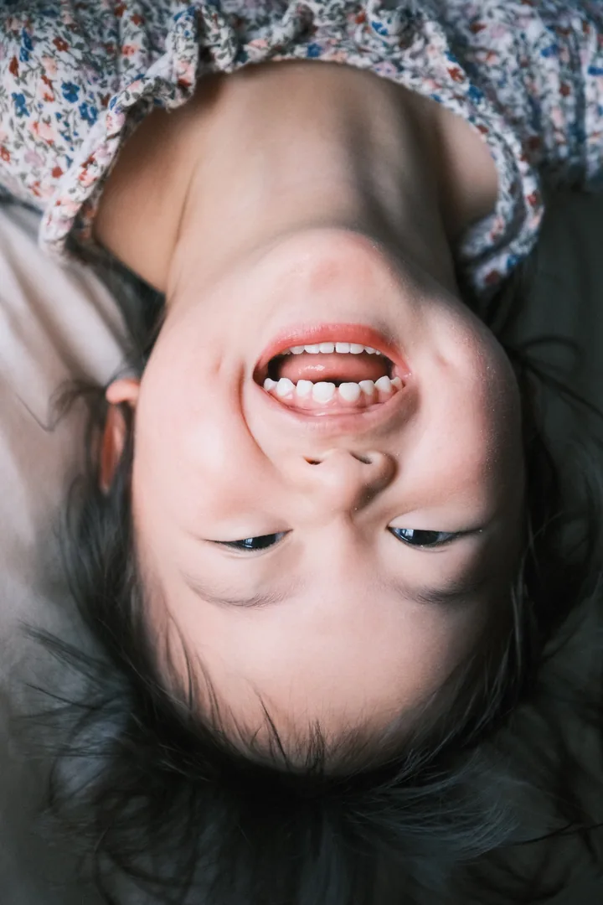
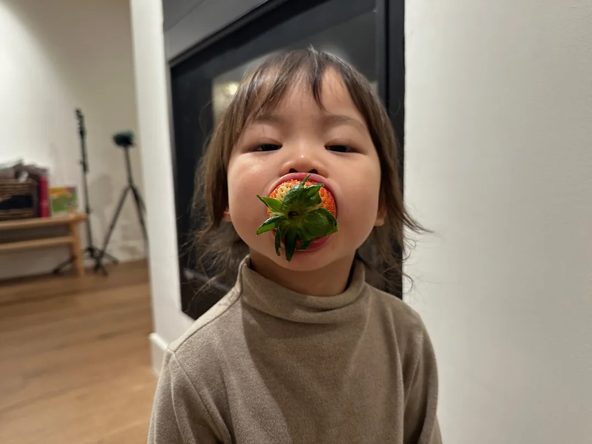
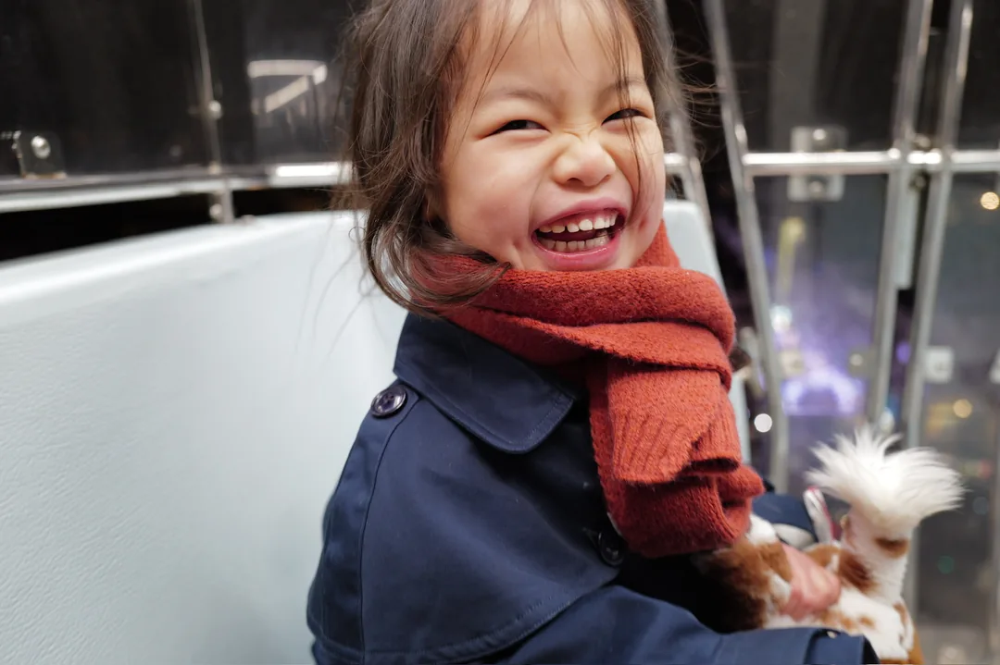
Carli actually understood what death was, and she had a faith purer than ours. When we prayed together each night, we would sometimes speak of friends who had left forever. Sometimes she felt sad, sometimes her heart ached, but she would always check with me: had they gone to be beside Father God? We would imagine together what it was like there, and then go on to talk of other things. A while later she might bring it up again, and so, slowly, we made our way through it. I think what she most wants to tell me right now is exactly what it is like beside Father God. She once said that the happiness we gave her was like purple water that flowed inside her tummy. I wonder — what does the happiness Father God gives her look like?
Her Gifts
Carli loved, loved to paint. Give her a brush, some paint, and a clean sheet of paper, and she would happily lose herself in a world of color all her own. We would always put on her special painting music and set beside her a cup of her favorite drink. Quiet and content, she let beautiful work flow straight from the tip of her brush. But what she loved most was painting together with Mama. Mama can’t really paint — painting was a dream Mama had never dared to pursue, and it was only because of Carli that she picked up a brush at all. But in Carli’s eyes, Mama’s paintings were the best, and her own were the best too. And the very best of all was surely the colorful love that filled the process of creating together with Mama.
At the easel, with Mama
Her paintings hang in our home like little windows into the way she saw everything — bright, bold, and unafraid. Her brush was free. Mama once asked her again: are the colors you pick up random, or do you plan them? She answered without a moment’s hesitation: I plan them. She knew the colors she wanted; she knew her own expression. Whenever Mama couldn’t help offering advice, she would tell her plainly: this is my painting, and I can paint it however I like.
This was our free and confident little painter. In truth, Mama and Papa never knew how to judge her talent — but if it is really as some of our artist friends say, that “to love it is the talent,” then she was surely the most gifted painter of all.
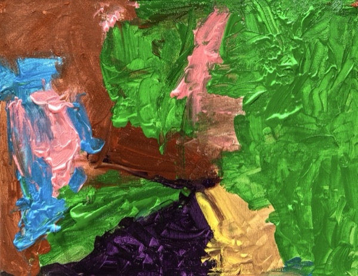
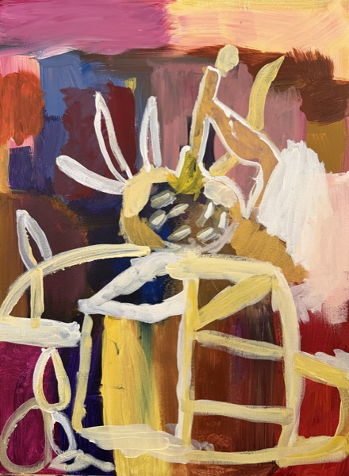
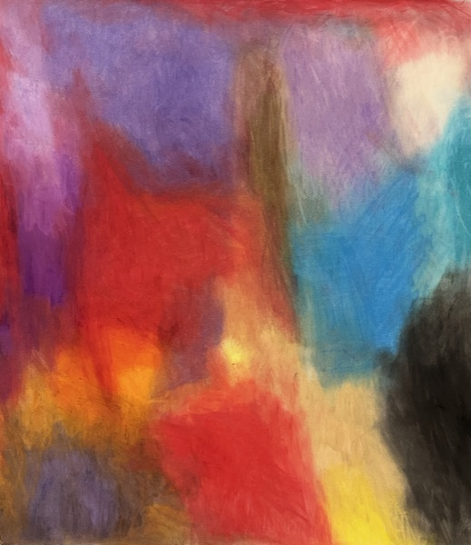
Besides painting, what Carli was proudest of was her magic of speaking three languages — Chinese, English, and French. When she was two, Papa and Mama made a brave decision and sent her to a French-immersion school, where everything was taught in French. We never really expected Carli to learn French; what we hoped was that from her earliest years she would come to understand that this world is rich, and varied, and wonderful. We wanted her to have all kinds of windows for peering out at the world — and hoped that wherever language could not reach, she would connect and feel with the sincerity that passes from one heart to another. Day by day Carli grew up at her French school, and she really did come to speak more and more French. More important still, this magic made her believe in herself more and more. We loved nothing better than watching her talk with grown-ups or children in full confidence — whatever the language, she was the best conversation partner anyone could ask for. She understood so much of what she heard, even complex and abstract ideas. In her small body lived a great wisdom, and with the simplest, plainest words she could always tell us grown-ups the things we could never quite figure out.
Yes, her inner world was that special — it seemed to have an intricate architecture all its own. Mama understood Carli best, because inside Mama there is a world of the same fine structure; with a single look in her eyes, Mama could see three, five layers of her thoughts. Once, after she broke down in tears, Mama led her to her calming corner, the place where she went to settle her feelings. When Mama asked, she clearly named the five emotions happening inside her all at once — anger, sadness, fear, worry for Mama, and feeling loved. How good, to hold on to the room to feel loved even in the middle of anger and sadness. And didn’t Carli read Mama in exactly the same way? From the time she was one month old, she could see into the deepest part of Mama’s soul and resonate with her with a tenderness words cannot say. This was an understanding that belonged to Mama and Carli alone. Mama says Carli was her best friend, her inner child, the mother who reparented her, and a soulmate unlike any other.
This is our Carli. We have never met anyone like her. Perhaps she truly did not belong to this world — perhaps she came here on purpose, to give us a glimpse of heaven.
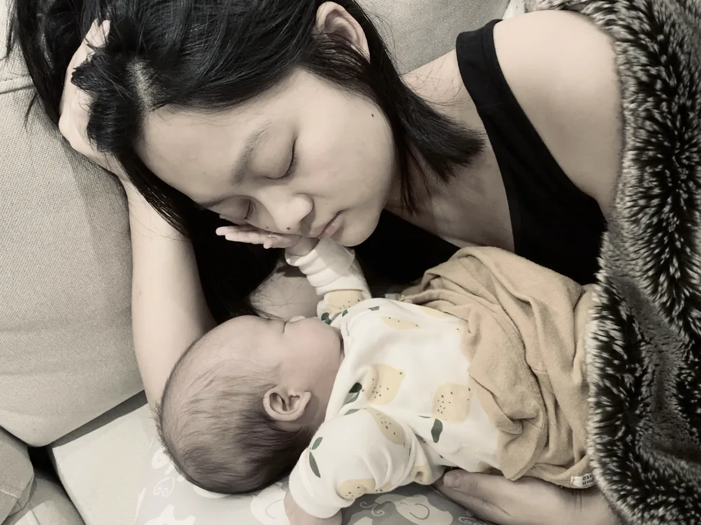
Her Family
Three things Carli said every single day: “I love my Family so much,” “Mama, I love you so much I don’t know what to do,” and “Daddy daddy I love you.” These past few days, as we tidied up the doodles Carli left scattered everywhere, we discovered that the back of every single one had “I love you Cindy / Peter / Leo” written in rainbow colors — some we had seen, some we never had. I think she really didn’t know what to do — a heart so full of love that she had no choice but to leave a light little trace of her deep affection wherever she could. In this home, Mama gave her the utmost devotion, yet blamed herself deeply for being too smothering; Papa gave her abundant ease, yet blamed himself deeply for not doing enough. But we know that, in Carli’s eyes, the Papa and the Mama she had gave her the very best.
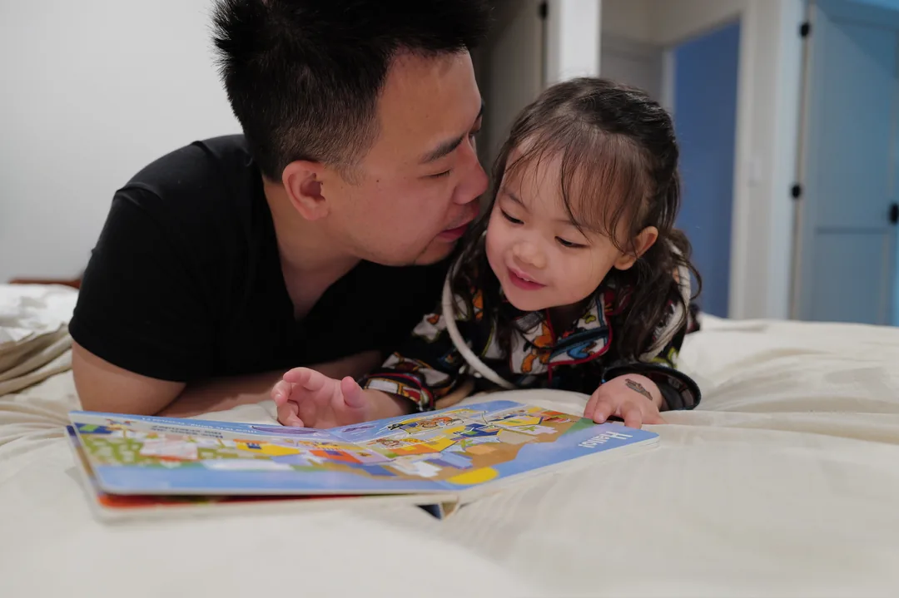
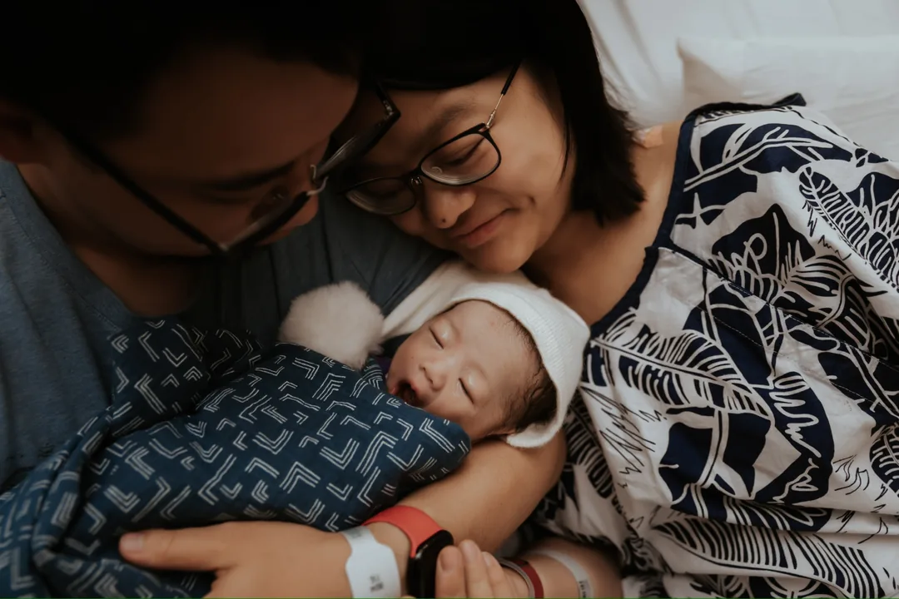
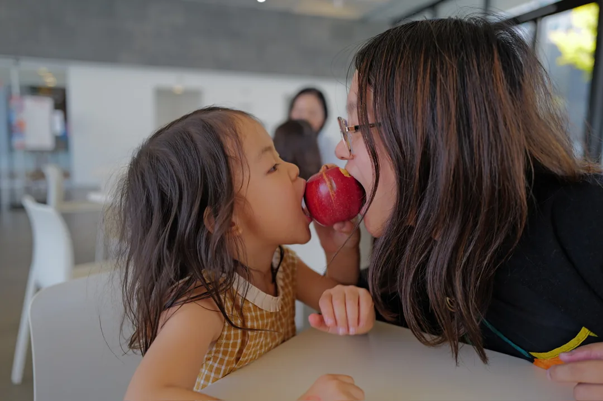
Last March, Carli became a big sister — big sister to little Leonardo. Gentle and full of anticipation, she learned the role carefully, step by step. Her love was real, never exaggerated. She had her jealousy, her timidity, her awkwardness and hesitation, her uncertainty about the new order of things. We treasure her honesty — treasure that, in learning responsibility, she never lost herself, and treasure even more how patiently she waited for her love for her brother to grow on its own. Little Leonardo’s eyes were full of nothing but his big sister, and Carli knew it. Sorting through videos and photos these past days, we discovered so many moments of her quietly caring for her brother in corners no one could see, and it filled our hearts with sweetness and gratitude. The way she drew a little closer to him, a little more tender each time, was truly like a flower slowly coming into bloom.
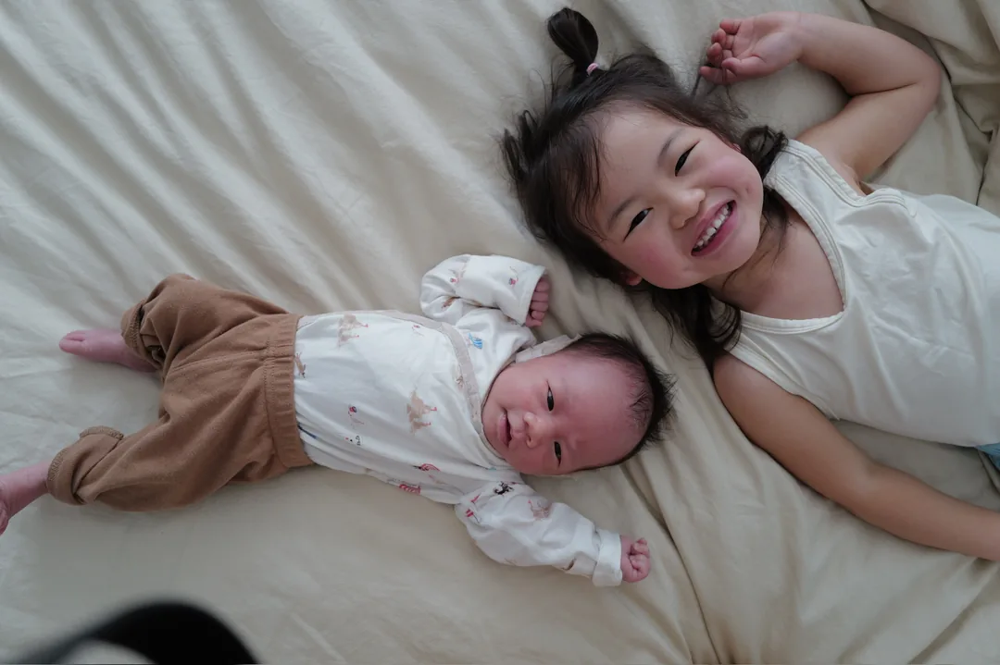
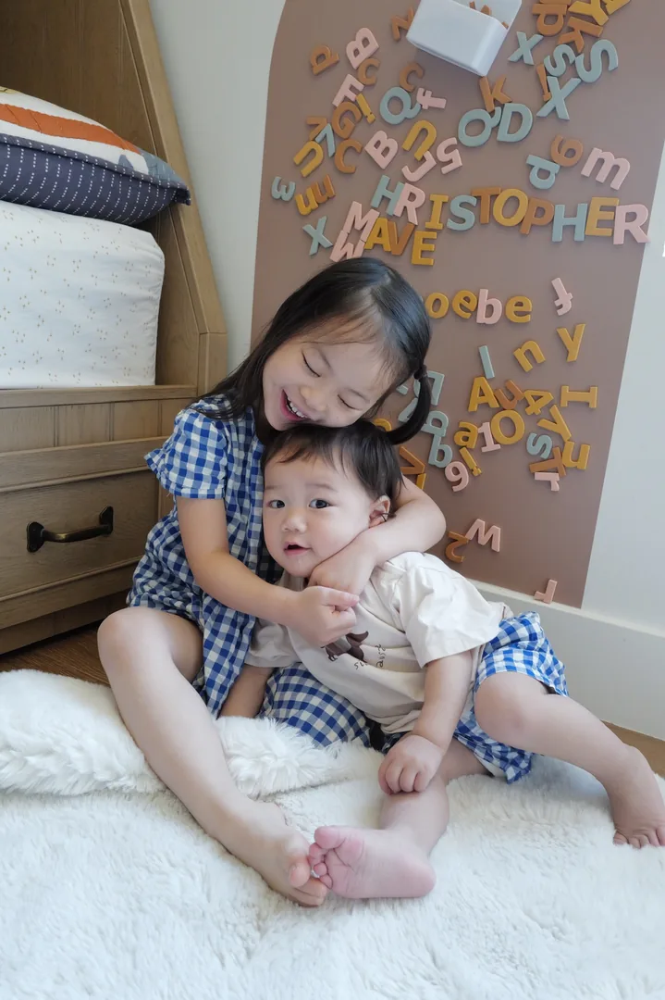
She loved her Family. We have never been so wholly loved by anyone. Never so understood by anyone. And having known what it is to be loved and understood like that, our souls have been changed forever.
Always Ours
Four and a half years was nowhere near enough. But every single frame of memory made in those years is ours to keep forever — a part of her life, and of ours, that belongs to us always.
Someone said to us these past days that time in heaven is not like time on earth — that in truth heaven has no time at all, that time is only a dimension that holds this world captive. So in Carli’s new world, she is already with us, and has been together with us from beginning to end. Earthly time will pass through us slowly and painfully, with longing and waiting every day. And when at last we are reunited, we will tell you every one of our stories from these long days — the painful ones and the happy ones alike.